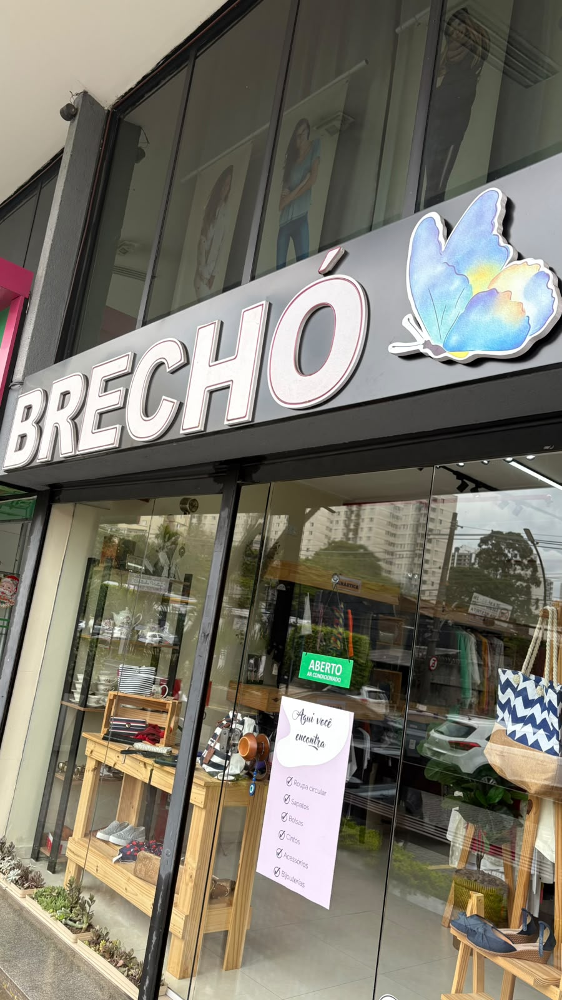

★ A história dos brechós em São Paulo

Brechó Butterfly: negócio familiar transforma roupas e aproxima histórias no Portal do Morumbi
O que começa como uma roupa esquecida no guarda-roupa pode ganhar um novo significado nas mãos de outra pessoa. É essa ideia que movimenta o Brechó Butterfly, negócio familiar administrado por Adriana, sua irmã Andrea e a mãe, Miriam. Localizado no Trade Center Shopping, na Rua Dr. Luiz Migliano, 1110, loja 14, no Jardim Taboão, em São Paulo, o espaço reúne moda de segunda mão, sustentabilidade e histórias de pessoas que encontram nas peças uma nova oportunidade. Funciona de segunda a sábado, das 10h às 18h. Segundo Adriana, os preços variam de acordo com a marca, o tipo e as condições de cada peça: é possível encontrar roupas por R$ 5, enquanto outras podem chegar a R$ 300.
Origem
A ideia surgiu com Andrea, que passava por uma transição profissional e decidiu investir no comércio de roupas usadas. Antes disso, ela havia organizado um bazar no salão do prédio onde morava, colocando à venda peças do próprio guarda-roupa. A experiência deu certo: vendeu tudo e ainda incentivou outros moradores a fazerem o mesmo.
Foi então que decidiu abrir o próprio brechó e convidou a irmã e a mãe para participarem do projeto. Miriam, de 77 anos, investiu na estrutura da loja, enquanto Adriana, de 54, e Andrea, de 55, passaram a dividir o trabalho. O negócio começou em um salão do prédio e, inicialmente, ocupava duas salas de 14 m². Em apenas quatro meses, mudou para um espaço de 120 m², dividido em dois andares. O Butterfly já completou dois anos de funcionamento.

O nome Butterfly também nasceu de uma história pessoal. A escolha foi de Adriana, inspirada no momento vivido pela irmã quando o projeto começou. Andrea passava por uma fase de decepção profissional, e Adriana enxergou naquele momento uma possibilidade de transformação.
"Ela estava num sofrimento tão grande, dentro do casulo e achando que aquilo era o fim do mundo. Mas, quando saísse daquele casulo, iria se transformar em uma borboleta, ganhar o mundo", conta Adriana.
A ideia também levou em consideração o significado da palavra em inglês. Butterfly termina com "fly", que significa voar. A cor lilás foi escolhida por ser a preferida de Andrea. Para Adriana, o nome representa a proposta do negócio: transformar a moda, a vida e as histórias, permitindo que uma roupa que já não faz mais sentido para alguém possa trazer alegria a outra pessoa.
Como funciona
Para Adriana, comprar em brechós vai além de encontrar roupas por preços mais baixos. A economia é um dos principais atrativos. Ela cita como exemplo uma calça que pode custar até R$ 1.000 em uma loja convencional e ser encontrada por R$ 85 no brechó. É um exemplo pontual, e não um levantamento de preços.
Mas a questão financeira não é a única razão para incentivar a moda de segunda mão. A sustentabilidade também tem um papel importante na proposta do Butterfly. Adriana chama a atenção para o descarte de roupas pela indústria têxtil e defende que peças em bom estado continuem circulando em vez de serem descartadas.
"Uma calça jeans pode durar anos no seu guarda-roupa ou pode circular também por anos", explica Adriana.
Outro ponto que ela observa no dia a dia da loja é a relação emocional que muitas pessoas desenvolvem com as roupas. Para a empreendedora, o desapego pode representar o encerramento de uma fase e a oportunidade de outra pessoa criar novas memórias com aquela peça.
"Quando a roupa entra aqui, ela vai contar uma outra história", afirma Adriana.
.jpeg)
Na loja
Na visita de 16 de novembro, às 13h, a reportagem conferiu a organização da loja, que se divide em seções: lingerie; calças e blusas, organizadas por tamanho (P, M, G e GG); blazers; macacões; moda praia, com biquínis e maiôs; roupas de academia; casacos e roupas de frio; vestidos; bolsas; óculos; acessórios; peças em promoção; e sapatos.
.jpeg)
Bastidores
Apesar do crescimento, administrar um brechó envolve desafios que nem sempre são percebidos pelos clientes. Um deles é a avaliação das peças. Muitas pessoas esperam receber um valor próximo ao que pagaram originalmente, mas, como explica Adriana, uma roupa usada não pode ser comercializada pelo mesmo preço de uma nova.
Antes de chegar às araras, as peças precisam passar por lavagem, higienização e passadoria. "A maquininha é o sócio que não trabalha", brinca Adriana.
Além das mudanças na vida profissional, o brechó também transformou a rotina das três mulheres. Antes da abertura, cada uma seguia seu próprio caminho. Depois de se casarem e saírem de casa, as irmãs passaram a ter menos convivência diária com a mãe. A criação do negócio mudou essa dinâmica. "Uma coisa muito importante que a loja nos proporcionou foi estar juntas de segunda a sábado", conta Adriana.
Hoje, as responsabilidades são divididas entre as três. Adriana cuida da parte administrativa, Andrea fica à frente da divulgação, do Instagram, do WhatsApp e dos grupos de clientes, enquanto Miriam participa dos cuidados com as roupas e do atendimento. A família também realiza boa parte das tarefas da loja, desde a organização e limpeza até a lavagem, a passadoria e a precificação das peças.
Histórias de clientes
Entre as experiências que marcaram a trajetória do brechó está a venda de um sobretudo de lã pura que permaneceu bastante tempo na loja. A peça havia sido comprada pelo estabelecimento, mas não despertava o interesse dos clientes. Até que uma mulher entrou procurando um casaco comprido e quente para o pai, que morava no Sul e tinha aproximadamente 1,90 m de altura.
"Eu falei: 'Você achou o casaco!'. Era a peça mais cara que tínhamos na loja naquela época. Um sobretudo de lã pura, belíssimo", relembra Adriana.
A mulher levou a peça para o pai e, depois, enviou uma fotografia dele usando o casaco. Segundo Adriana, ele passou a utilizá-lo todos os dias. Uma roupa que ficou tanto tempo sem encontrar comprador acabou se tornando parte da rotina de alguém.
.jpeg)
A história também representa uma das ideias defendidas pelo brechó: as peças não precisam ser separadas entre masculinas e femininas. O importante é que sejam confortáveis e façam sentido para quem as veste. Segundo Adriana, há homens que procuram saias e cropped, assim como mulheres que preferem roupas de tamanhos maiores.
Outro desafio é o preconceito que ainda existe em relação aos brechós. Adriana conta que algumas pessoas entram na loja dizendo que não compram roupas usadas, mas acabam encontrando justamente uma peça que procuravam.
O garimpo também faz parte dessa experiência. Nem sempre o cliente sai com aquilo que tinha em mente quando chegou. Às vezes, entra procurando uma calça e acaba levando um vestido ou um biquíni. Para Adriana, o interessante é justamente permitir que cada pessoa descubra o que combina com ela.
Com o tempo, o Butterfly se tornou mais do que um espaço de compra e venda. Clientes passam pela loja para conversar, tomar café e compartilhar acontecimentos pessoais. Adriana conta que algumas pessoas voltam para contar novidades sobre relacionamentos, mudanças de vida e até a chegada de filhos. "Nesses dois anos, a história dos outros é que nos move", afirma Adriana.
O Butterfly reúne pessoas em torno de roupas usadas, com preços que vão de R$ 5 a R$ 300 e a defesa de que peças em bom estado continuem circulando. Algumas pessoas voltam para contar novidades, e para as três mulheres o negócio também virou uma forma de estar juntas no dia a dia, de segunda a sábado. Para Adriana, a proposta é que uma roupa que já não faz mais sentido para alguém possa trazer alegria a outra pessoa.